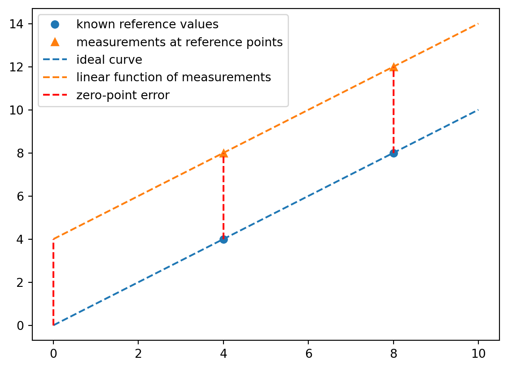
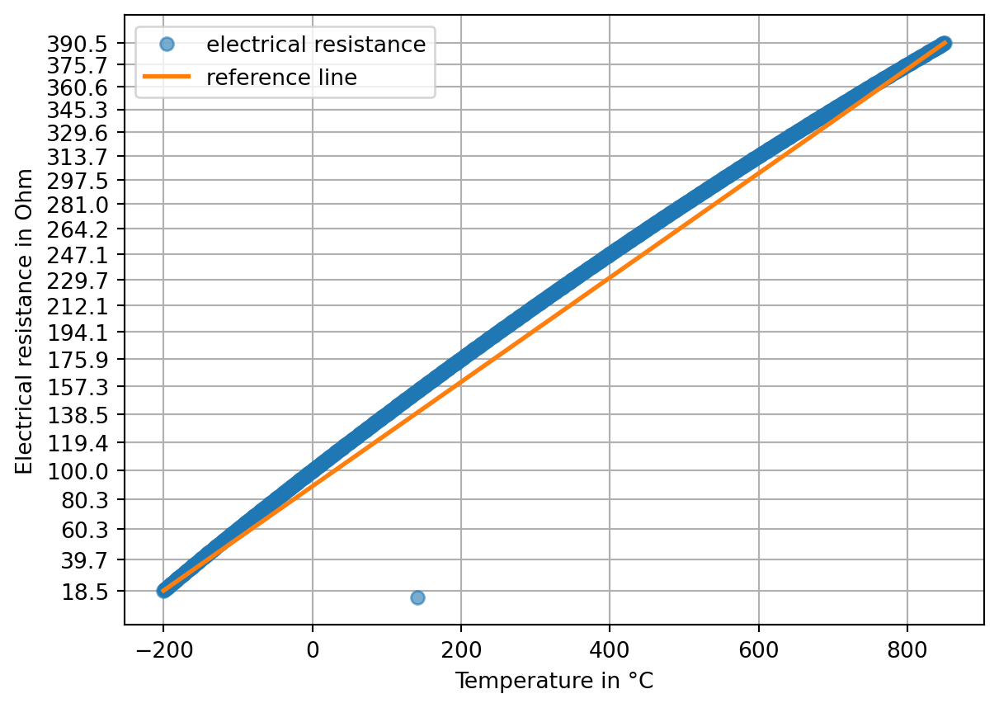
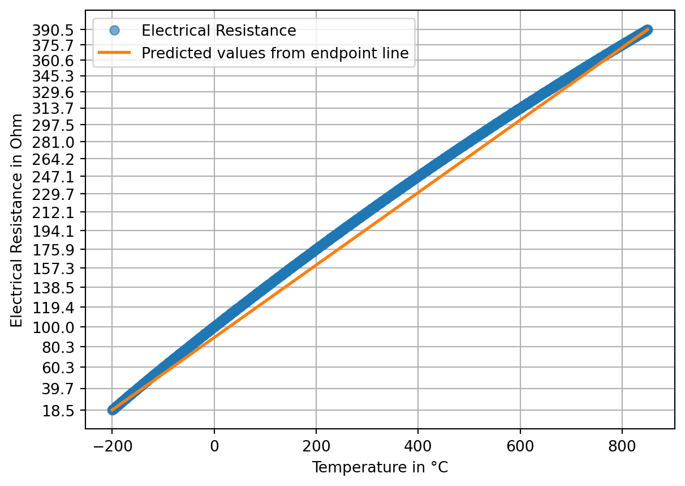
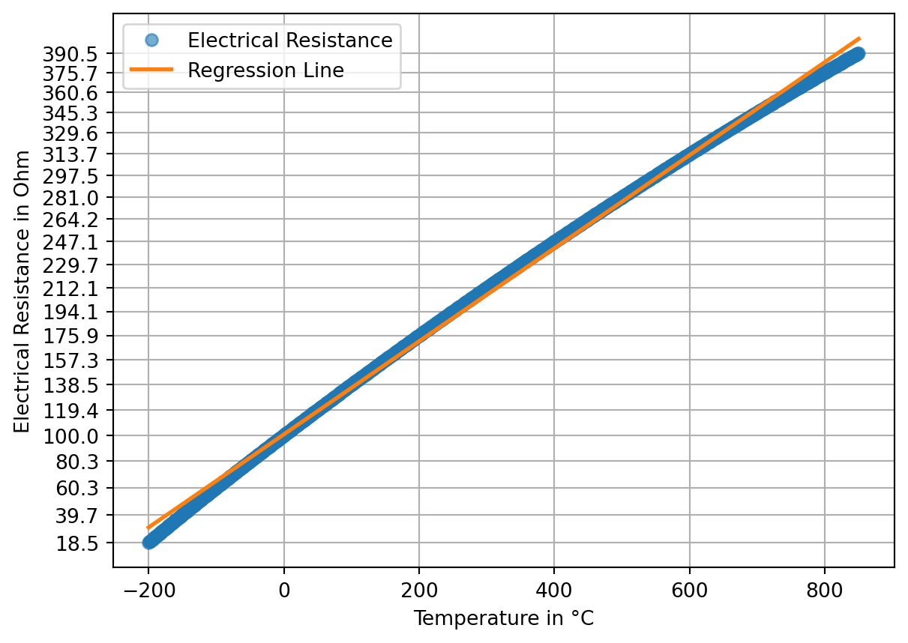

The accuracy of measurements is improved by correcting systematic measurement deviations. In this chapter, typical types of errors in measurements and practical calibration methods are introduced:
additive errors,
multiplicative errors, and
nonlinearity.
In this section, we use the established terminology, even though the errors would more precisely be described as systematic measurement deviations.
As an exercise, use cooked ice. (You have to use the zero point and 100 degrees as reference values). The problem is that cooking ice is also nonlinear (above 50 °C). Note that you do not have a reference value for the zero point (which lies at −273 °C), so you have to estimate it using linear regression. Presumably, it is not necessary to convert to Kelvin because of the absolute shift. → We have already shown for the calculation without measurement values for the zero point that no shift is required.
But does this also apply to temperature sensors that cannot measure down to absolute zero at all? Perhaps by conceptualizing the lower limit of the measurement range as the zero point.
The nonlinearity is not an error of the sensor system, but a physical effect. How do we deal with this? → One could say that the effect is approximated via the linearly estimated span error. Between the nonlinear measurement curve and the linearly estimated span error, a linearity error then arises.
The problem is that the data must be cleaned without interpolating or smoothing it → work with a linear trend and standard deviation, or refer to the module on data fitting and data optimization.
6.1 Calibration and Adjustment
The correction of systematic measurement deviations can be carried out in two ways: by calibration or by adjustment of the measuring instrument.
In the narrower sense, the term calibration refers to the determination of the relationship between measured values or their arithmetic mean and the agreed correct value of the measurand.
Definition 6.1: Calibration according to DIN 1319
“Determination of the relationship between measured values […] or expected value […] of the output quantity […] and the associated true […] or correct value […] of the measurand present as the input quantity for a given measuring device […].” (Deutsches Institut für Normung 1995, p. 22)
In a broader sense, calibration also means “the creation of a correction table […], the determination of calibration factors or a (empirical) calibration function” (Deutsches Institut für Normung 1995, p. 22). These are methods used to correct measurement values affected by systematic measurement deviations without changing the measuring instrument.
In contrast, adjustment permanently changes the measuring instrument.
Definition 6.2: Adjustment according to DIN 1319
“Setting or aligning a measuring instrument […], in order to eliminate systematic measurement deviations […] as far as required for the intended application.” (Deutsches Institut für Normung 1995, p. 22)
6.2 Calibration Methods According to DIN 1319
DIN 1319 lists three calibration methods, which are only briefly discussed here:
Correction table,
Determination of calibration factors, and
Determination of a (empirical) calibration function.
Which method is used depends on the field of application, the availability of data, and the desired accuracy.
Method
Application for …
Advantages
Disadvantages
Correction table
nonlinear, difficult to model
easy to use
many data points required, otherwise interpolation inaccurate
Calibration factors
linear deviation
easy to implement
insufficient for nonlinearity
Calibration function
nonlinear, modelable
very accurate
higher effort
Correction Table
A correction table can represent arbitrary corrections, provided that sufficient data points are available. In Kapitel 6.6.1 we will learn about an example of a correction table.
Determination of Calibration Factors
A calibration factor can be specified when a constant relative deviation is present. A practical example can be found here on page 1.
Determination of a (Empirical) Calibration Function
The zero offset error describes the deviation of the measured quantity from zero when the true value is actually zero. The zero offset error is also referred to as zero adjustment error, zero shift, or offset error. The zero offset error is constant and acts additively on every measured value. (ICS Schneider Messtechnik)
The calculations here are not yet correct. With simple values it seems to work by chance, but with shifted values it no longer does. The correct approach is shown in the test using Kelvin.
The zero-offset error can be easily determined if measurement values for the zero point are available and the true value is known. (If it is also known that no further systematic measurement deviations are present, the zero-offset error can be determined using any true reference value.) This is the case for the data created for graphical representation.
print(f"The zero-offset error is: {measured_values[0] - measured_quantity[0]}")
The zero-offset error is: 4
If no data for the zero point is available, the zero-point error can be estimated using linear regression from at least two known reference points. This involves estimating an ideal calibration curve and determining its intersection with the y-axis. Likewise, a linear function is estimated for the measured values. The difference between the y-axis intercepts gives an estimate of the zero-point error.
# known reference pointsx1 =4x2 =8y1 = measured_quantity[x1]y2 = measured_quantity[x2]# estimate ideal calibration curve# print(linear_model) returns intercept + slopelm_curve = poly.polyfit(x = [x1, x2], y = [y1, y2], deg =1)print("The first value is the intersection of the ideal calibration curve with the y-axis:", lm_curve.round(2), sep ="\n")# estimate linear function for the measured values## at least 2 points are neededlm_measurements = poly.polyfit(x = [x1, x2], y = [measured_values[x1], measured_values[x2]], deg =1)print("Linear function estimated from 2 measured values:", lm_measurements.round(2), sep ="\n")## estimation using all measured values is more reliablelm_measurements_all = poly.polyfit(x = np.arange(measured_values.size), y = measured_values, deg =1)print("Linear function estimated from all measured values:", lm_measurements_all.round(2), sep ="\n")print("\nThe difference between the estimated zero-point of the measured values and the\nestimated zero-point of the ideal calibration curve is the zero-point error:", (lm_measurements[0] - lm_curve[0]).round(2), sep ="\n")
The first value is the intersection of the ideal calibration curve with the y-axis:
[-0. 1.]
Linear function estimated from 2 measured values:
[4. 1.]
Linear function estimated from all measured values:
[4. 1.]
The difference between the estimated zero-point of the measured values and the
estimated zero-point of the ideal calibration curve is the zero-point error:
4.0
The procedure is illustrated graphically.
# calculate linear functionsestimated_ideal_curve = poly.polyval(x = np.arange(measured_values.size), c = lm_curve)linear_function_measurements = poly.polyval(x = np.arange(measured_values.size), c = lm_measurements)# plotting## pointsplt.plot([x1, x2], [y1, y2], marker ='o', linestyle ='none', color ='C0', label ='known reference values')plt.plot([x1, x2], [measured_values[x1], measured_values[x2]], marker ='^', linestyle ='none', color ='C1', label ='measurements at reference points')## linesplt.plot(np.arange(measured_values.size), estimated_ideal_curve, marker ='none', linestyle ='dashed', color ='C0', label ='ideal curve')plt.plot(np.arange(measured_values.size), linear_function_measurements, marker ='none', linestyle ='dashed', color ='C1', label ='linear function of measurements')plt.plot([0, 0], [measured_quantity[0], measured_values[0]], linestyle ='dashed', label ='zero-point error', color ='red')plt.plot([4, 4], [measured_quantity[4], measured_values[4]], linestyle ='dashed', color ='red')plt.plot([8, 8], [measured_quantity[8], measured_values[8]], linestyle ='dashed', color ='red')plt.legend()plt.show()

Are there other methods?
Correcting the zero-point error
The zero-point error is corrected by subtracting it from the measured values. The procedure for determining the zero-point error is illustrated in the following example with different values.
# Generate datameasured_quantity = np.arange(0, 11) +5measured_values = measured_quantity +2.5# known reference pointsx1 =2x2 =5y1 = measured_quantity[x1]y2 = measured_quantity[x2]# estimate ideal characteristic lineideal_line = poly.polyfit(x = [x1, x2], y = [y1, y2], deg =1)# estimate linear function of the measurements## estimation over all measurements is more reliablemeasured_line = poly.polyfit(x = np.arange(measured_values.size), y = measured_values, deg =1)# determine zero-point errorzero_point_error = measured_line[0] - ideal_line[0]print(f"The zero-point error is: {zero_point_error.round(2)}")# correct zero-point errorcorrected_measurements = measured_values - zero_point_error
The zero-point error is: 2.5
Exercise: Zero-Point Error
Andres’ bike sensor always measures 3 degrees too high because the display generates heat (offset error). Here are the values with the display off and the known reference values.
6.4 Multiplicative Error: Span Error
Span error seems to be a rarely used term.
A span error is an error that increases or decreases over the measurement range (the span) of the quantity being measured. The relative measurement deviation \(\delta\) remains constant, while the absolute measurement deviation \(\Delta\) depends on the measured value. (ics Schneider Messtechnik)
The span error can be estimated if reference values are known. With the complete example data, it’s straightforward (in this example, a warning due to division by 0 is suppressed):
The span error is corrected by dividing the measured values by 1 plus the span error. The procedure for determining the span error is illustrated in the following example with different values.
Absolute and multiplicative deviations can occur simultaneously. In this example, the absolute measurement deviation decreases over the displayed value range, because the zero-point error has a positive sign and the span error has a negative sign.
Using at least two known reference points, the zero-point and span errors can be estimated with linear regression. In linear regression, an index starting at 0 is used for the x-values. To correctly determine the zero-point error, this index is shifted by the estimated true zero point.
This is necessary because if the measured quantity does not include a value for 0, the span error would also be applied to the value at index 0. Therefore, the span error must be corrected first.
(If the values include 0, this step is not noticeable.)
# Generate datameasured_quantity = np.arange(0, 11) +7measured_values = measured_quantity +4- measured_quantity /3# Known reference pointsx1 =4x2 =8y1 = measured_quantity[x1]y2 = measured_quantity[x2]# Estimate ideal characteristic linelm_characteristic = poly.polyfit(x = [x1, x2], y = [y1, y2], deg =1)print(f"lm_characteristic: {lm_characteristic}")# Linear regression of measurementslm_measurements = poly.polyfit(x = np.arange(measured_values.size), y = measured_values, deg =1)# Linear regression of measurements plus y-intercept of ideal characteristic linelm_measurements_plus_intercept = poly.polyfit(np.arange(measured_values.size) + lm_characteristic[0], measured_values, 1)# Determine zero-point errorzero_point_error = lm_measurements_plus_intercept[0]print(f"The zero-point error is: {zero_point_error.round(2)}")# Determine span errorspan_error = lm_measurements[1] - lm_characteristic[1]print(f"The span error is: {((lm_measurements[1] - lm_characteristic[1]) *100).round(2)} %")
lm_characteristic: [7. 1.]
The zero-point error is: 4.0
The span error is: -33.33 %
Simone’s approach leads to correctly calibrated measurements. The variable a is the correction factor for the span error. However, the variable b has no intrinsic meaning. But why does it work then?! Because b represents the zero-point correction when the span error is corrected first.
This has to do with the structure of the data and the correction. b is the correction of the zero-point error * span error. This means that from the Arnold formula, the span error can be calculated as \(-1 * {b \over a}\).
My approach is more flexible because it can estimate the correction from arbitrary points, rather than just the minimum and maximum.
6.6 Nonlinearity: Linearity Error
Example Pt100
The Pt100 is a platinum resistance thermometer (Pt = Platinum) with a defined resistance of \(100 \Omega\) at a temperature of 0°C (hence the name Pt100). The resistance of a Pt100 increases with temperature. At 100 °C, for example, the resistance is \(138.51 \Omega\). However, the relationship between the input quantity, the electrical resistance, and the measured temperature is only approximately linear.
The characteristics of a Pt100 resistor are specified in the standard DIN EN IEC 60751 (Deutsches Institut für Normung 2023). The relationship is described by two polynomials: one for the temperature range from -200 °C to 0 °C, and one for 0 °C to 850 °C.
For the temperature range –200 °C to 0 °C: \[
R_T = R_0 \cdot \left(1 + A \cdot T + B \cdot T^2 + C \cdot (T - 100 ^\circ\text{C}) \cdot T^3\right)
\]
For the temperature range 0 °C to +850 °C: \[
R_T = R_0 \cdot \left(1 + A \cdot T + B \cdot T^2\right)
\]
Where:
\(R_T\) is the resistance at temperature \(T\),
\(R_0\) is the resistance at \(0^\circ\text{C}\),
\(A\), \(B\), and \(C\) are constants describing the sensor’s specific characteristics. Specifically:
The appendix of the standard contains tables showing the relationship between temperature and measured resistance. The table format allows quickly determining the measured temperature from a measured resistance value. The first column lists temperatures in tens of degrees, while the next ten columns represent the unit digits. For temperatures below zero, the unit digit is subtracted (indicated by the negative sign \(-\)), and for temperatures above zero, it is added (indicated by the positive sign \(+\)). A consolidated version can be found, for example, here.
The notation \(t_{90} / °C\) is based on the International Temperature Scale ITS-90 of 1990, which defines temperatures \(T_{90}\) in Kelvin and \(t_{90}\) in degrees Celsius. The notation indicates that the table values are in degrees Celsius. (Deutsches Institut für Normung (2023), p. 10)
Task: Reading the Pt100 Table
For data analysis, the tabular format is less suitable. The consolidated version was copied into two CSV files. Read the files so that the electrical resistance and temperature each form ascending sequences (e.g., as a list, NumPy array, or a Pandas data structure). The file paths are:
There are 201 values (from -200 to 0). The data starts at the row with index 1 (if the first row is read as header). This row contains only one entry in column ‘0’. The following rows should be read from right to left. The decimal separator is ,.
Reading the data from right to left can be done in many ways. A one-line solution starts by passing a negative step size to the method pd.iloc[::-1].
This causes the rows of the DataFrame to be displayed in reverse order. To display the columns in reverse order, the DataFrame is transposed twice using the pd.T method.
print(df.T.iloc[::-1].T)
2 1 0
0 1 2 3
1 4 5 6
The NumPy method np.flatten() can be used to reduce an array to a one-dimensional structure. To do this, the DataFrame is converted to a NumPy array using the pd.to_numpy() method.
The temperature is generated again using a range object.
abovezero_temperature = pd.Series(range(1, 851)) # range stop is exclusive
The Series generated from both datasets can be combined:
pt100 = pd.DataFrame({'Temperature': pd.concat([below_zero_temperature, abovezero_temperature], ignore_index=True),'Ohm': pd.concat([below_zero_ohm, above_zero_ohm], ignore_index=True)})# Show the first and last rows of the combined DataFrameprint(pt100.head(), pt100.tail(), sep='\n')# Display information about the DataFrameprint(pt100.info())
Using the data from Tipp 6.1, the nonlinearity of the sensor can be visualized.
plt.plot(pt100['Temperature'], pt100['Ohm'], marker='o', linestyle='', label='electrical resistance', alpha=0.6)plt.plot([pt100['Temperature'].iloc[0], pt100['Temperature'].iloc[-1]], [pt100['Ohm'].iloc[0], pt100['Ohm'].iloc[-1]], linewidth=2, label='reference line')plt.yticks(pt100['Ohm'][::50])plt.xlabel('Temperature in °C')plt.ylabel('Electrical resistance in Ohm')plt.grid()plt.legend()plt.show()

It is noticeable that the data contains a missing value. The position of the missing value is determined using two Pandas methods. pd.diff() returns the difference between each value and its predecessor. pd.idxmin() returns the row index (specifically the label) of the smallest value. (If the missing value were above the line, pd.idxmax() would be used.)
# := is the so-called walrus operatorprint(( missing_value_position := pt100['Ohm'].diff().idxmin() ))print(pt100.iloc[list(range(missing_value_position -2, missing_value_position +3))])
The correct value can be read from the DIN standard (Deutsches Institut für Normung 2023, p. 26) (153.96). However, the value can also be interpolated (see example).
Beispiel 6.2: Interpolation
The simplest form of interpolation is linear interpolation.
plt.plot(pt100['Temperature'], pt100['Ohm'], marker='o', linestyle='', label='electrical resistance', alpha=0.6)plt.plot([pt100['Temperature'].iloc[0], pt100['Temperature'].iloc[-1]],[pt100['Ohm'].iloc[0], pt100['Ohm'].iloc[-1]],linewidth=2, label='reference line')plt.yticks(pt100['Ohm'][::50])plt.xlabel('Temperature in °C')plt.ylabel('Electrical resistance in Ohm')plt.grid()plt.legend()plt.show()
Quantifying Nonlinearity
Two methods for quantifying nonlinearity are the fixed-point method and the tolerance band method.
Fixed-Point Method
Definition 6.3: Fixed-Point Method
The endpoints of the actual characteristic curve are connected by a straight line. The linearity error is the maximum deviation of the characteristic curve from this line. (Grote und Feldhusen 2011, pp. W2-W3 (pp. 1661-1662))
First, we determine the predicted values of a line defined by the endpoints.
lm = poly.polyfit( x = [pt100['Temperature'].iloc[0], pt100['Temperature'].iloc[-1]], y = [pt100['Ohm'].iloc[0], pt100['Ohm'].iloc[-1]], deg =1)print(lm.round(2)) # intercept + slopepredicted_values = poly.polyval(x = pt100['Temperature'], c = lm)plt.plot(pt100['Temperature'], pt100['Ohm'], marker ='o', linestyle ='', label ='Electrical Resistance', alpha =0.6)plt.plot(pt100['Temperature'], predicted_values, linewidth =2, label ='Predicted values from endpoint line')plt.yticks(pt100['Ohm'][::50]);plt.xlabel('Temperature in °C')plt.ylabel('Electrical Resistance in Ohm')plt.grid()plt.legend()plt.show()
[89.37 0.35]

The maximum linearity error can be determined from the difference between the measured electrical resistance and the linear predicted values.
Linearity error using fixed-point method: 16.43 Ohm.
Tolerance Band Method
Definition 6.4: Tolerance Band Method
In the tolerance band method, a line is fitted through the measurement points such that either the sum of the squared deviations of the points from this line (least squares method) or the largest single deviation (Chebyshev approximation) is minimized. The size of the linearity error is the maximum vertical distance of the characteristic curve from this fit line. (Grote und Feldhusen 2011, p. W3 (p. 1662))
We have already learned the principle of the least squares method.
lm = poly.polyfit( x = pt100['Temperature'], y = pt100['Ohm'], deg =1)print(lm.round(2)) # intercept + slopepredicted_values = poly.polyval(x = pt100['Temperature'], c = lm)plt.plot(pt100['Temperature'], pt100['Ohm'], marker ='o', linestyle ='', label ='Electrical Resistance', alpha =0.6)plt.plot(pt100['Temperature'], predicted_values, linewidth =2, label ='Regression Line')plt.yticks(pt100['Ohm'][::50]);plt.xlabel('Temperature in °C')plt.ylabel('Electrical Resistance in Ohm')plt.grid()plt.legend()plt.show()
[100.67 0.35]

The maximum linearity error (i.e., the largest residual) can be determined from the difference between the measured electrical resistance and the linear predicted values.
linearity_error = (pt100['Ohm'] - predicted_values).abs().max()print(f"Linearity error according to the tolerance band method: {linearity_error:.2f} Ohm.")
Linearity error according to the tolerance band method: 11.45 Ohm.
Problem: The Tolerance Band Method Produces a Zero-Point Error
6.7 Types of Errors and Practical Calibration Methods
Nonlinearity
In an ideal measurement, the value of interest depends linearly on the measured value. Many analog sensors, due to material properties or temperature dependence, respond nonlinearly to the measured quantity. This means that the measured values are not directly proportional to the physical quantity being measured. This so-called linearity error must be corrected in order to achieve accurate measurements.
There are two main approaches. One is to use nonlinear parameter estimation methods, which are covered in the Data Fitting and Optimization Methods Module. The other is to correct the linearity error so that simpler linear parameter estimation methods can be used. Correction of linearity errors is the focus of this chapter.
6.8 Other
Hysteresis: Delay between the change of the input value and the response speed of the measured value
Drift: Slow change of sensor output over time
Noise: Random fluctuations in sensor output
6.9 Occurrence Together with Nonlinearity
6.10 Residual Ramp
(Additional error sources: Hysteresis, Drift, Noise, or Zero-Point Shift)
Methods for Correction: Where is the variable transformation needed for linear parameter estimation?
Creating a Calibration Curve/Table: The sensor is measured at a series of known reference values (calibration points). These points are used to create an individual curve or table that represents the actual behavior of the sensor.
Applying Mathematical Corrections:
Nonlinear Regression: A function (e.g., a polynomial) is fitted to the calibration data. The difference between the measured values and the function is minimized to achieve the best possible fit. This method is shown in the Data Fitting and Optimization Methods Module.
Specific Coefficients: Certain sensor types have standard models with specialized coefficients.
ITS-90 and Callendar–van Dusen coefficients: For the calibration of platinum sensors.
Steinhart–Hart coefficients: A common method for thermistors to calculate temperature.
A sufficient number of calibration points should be collected across the entire measurement range to accurately represent the nonlinearity.
Error Compensation: By applying these corrections, zero-point and span errors are also addressed, improving the accuracy of the sensor across its full measurement range.
Deutsches Institut für Normung. 1995. „Grundlagen der Meßtechnik - Teil 1: Grundbegriffe“. DIN Media. https://doi.org/10.31030/2713411.
———. 2023. „Industrielle Platin-Widerstandsthermometer und Platin-Temperatursensoren (IEC 60751:2022). Deutsche Fassung EN IEC 60751:2022“. DIN Media. https://doi.org/10.31030/3405985.
Grote, Karl-Heinrich, und Jörg Feldhusen, Hrsg. 2011. Dubbel: Taschenbuch für den Maschinenbau. 23. Aufl. Springer Berlin, Heidelberg. https://doi.org/10.1007/978-3-642-17306-6.